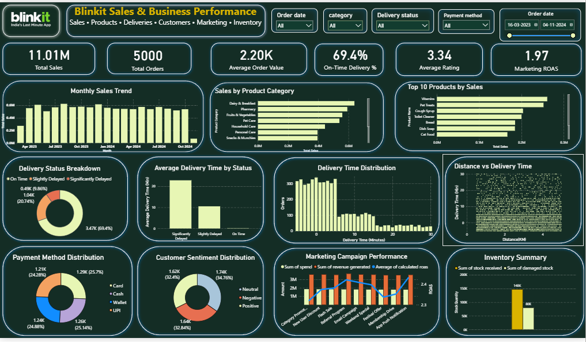

Power BI · Business intelligence
Blinkit Sales & Business Performance Analytics
I built a single-page Power BI dashboard to explore sales, product performance, delivery trends, customer feedback, marketing campaigns, and inventory activity.

What I explored
- Sales KPIs and monthly trends
- Category and product sales
- Delivery status and delivery-time patterns
- Customer sentiment and payment methods
- Marketing ROAS and inventory data quality
Selected findings
- 69.40% of delivery records were marked on time.
- Dairy & Breakfast contributed 12.86% of item-level sales.
- Campaign ROAS ranged from approximately 1.94× to 2.03×.
- Sales and inventory data limitations were documented.